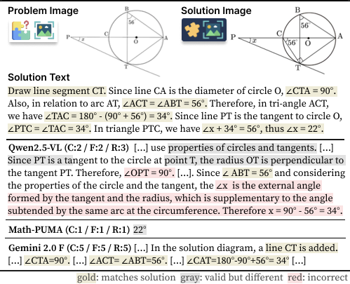

With the rapid advancement of mathematical reasoning capabilities in Large Language Models (LLMs), AI systems are increasingly being adopted in educational settings to support students' comprehension of problem-solving processes. However, a critical component remains underexplored in current LLM-generated explanations: multimodal explanation. In real-world instructional contexts, human tutors routinely employ visual aids, such as diagrams, markings, and highlights, to enhance conceptual clarity. To bridge this gap, we introduce the multimodal solution explanation task, designed to evaluate whether models can identify visual keypoints, such as auxiliary lines, points, angles, and generate explanations that incorporate these key elements essential for understanding.
To evaluate model performance on this task, we propose ME2, a multimodal benchmark consisting of 1,000 math problems annotated with visual keypoints and corresponding explanatory text that references those elements. Our empirical results show that, aside from recent large-scale open-source and closed-source models, most generalist open-source models, and even math-specialist models, struggle with the multimodal solution explanation task. This highlights a significant gap in current LLMs' ability to reason and explain with visual grounding in educational contexts.
ME2 is a multimodal solution explanation benchmark consisting of 1,000 instances. Each instance contains a problem text (Tp), a problem image (Ip), an explanatory solution text (Ts), a solution image (Is), and visual keypoints (VK) that highlight how the solution image differs from the original, along with a concise summary of the explanation.
We propose two subtasks to robustly analyze multimodal solution explanation capacity: (1) Visual Keypoint Identification, which challenges machines to recognize visual keypoints useful for subsequent explanation, and (2) Keypoint-based Explanation Generation, which requires models to generate explanations that explicitly reference the identified visual keypoints.
Examples of multimodal solution explanations from ME2 benchmark showing visual keypoints and corresponding explanatory text.
Additional examples demonstrating the diversity of visual elements and explanation styles in the ME2 dataset.
We evaluate state-of-the-art multimodal large language models on ME2 benchmark across two main tasks:
These results underscore the need for further research in multimodal reasoning and visual grounding for educational applications.
@misc{park2025explainvisualkeypointslike,
title={Explain with Visual Keypoints Like a Real Mentor! A Benchmark for Multimodal Solution Explanation},
author={Jaewoo Park and Jungyang Park and Dongju Jang and Jiwan Chung and Byungwoo Yoo and Jaewoo Shin and Seonjoon Park and Taehyeong Kim and Youngjae Yu},
year={2025},
eprint={2504.03197},
archivePrefix={arXiv},
primaryClass={cs.CL},
url={https://arxiv.org/abs/2504.03197},
}